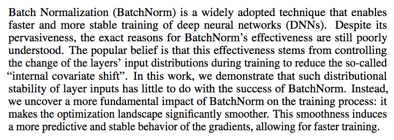

Deep Learning - Week 8
Course starts soon..
Happy new year :)
Project Check
Today we skip the quiz and make a small check about the project, how you started and what your objectives are.
How it works
We create Breakout Rooms, and in each Breakout Rooms there are two groups.
The first group has 3 minutes to explain the project, and the other group 2 minutes for feedback and questions. Then group switches and the sceond group explains and first gives feedback. In total it takes 10 minutes.
Afterwards we come back to the main session and each group reports shortly what they learned from the others. So listen carefully.
What should be explained
QUIZ (15 mins)
1. Which approach should you use in your project?
1. If we use batch normalization, should we stop using normalization before the input layer?
2. Will using normalization result in faster or slower execution at training and testing time?
3. Hyperparameters search: which one is better between random and grid search? And why? Can you think of a different solution?
DISCUSSION AND ANSWERS
Paper of the Week
How Does Batch Normalization Help Optimization?, Shibani Santurkar, Dimitris Tsipras, Andrew Ilyas, Aleksander Madry,
Thirty-second Conference on Neural Information Processing Systems, NeurIPS 2018
EXERCISE (15-20 mins)
We go through the programming assignment that were planned for this week.For the next week